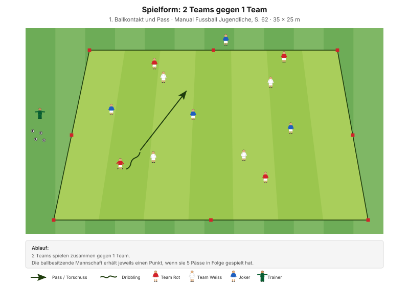
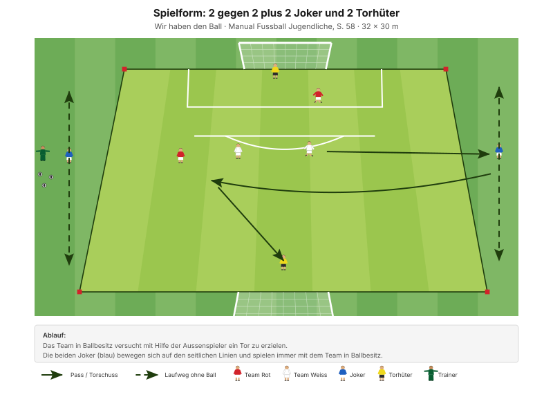
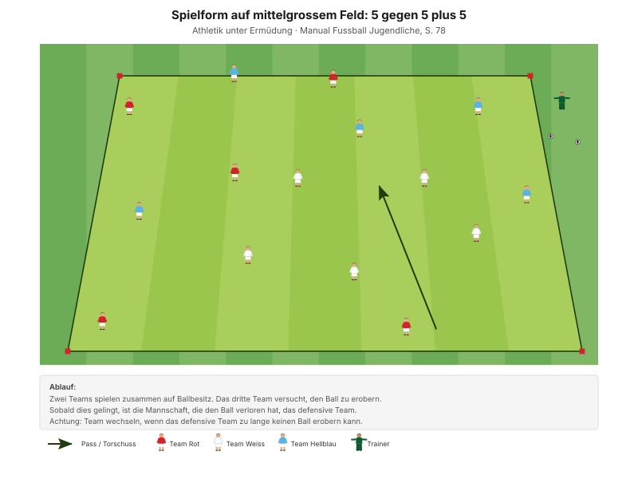

Ein Spiel besteht nicht aus Dauervollgas. Es besteht aus Ruhe halten und plötzlich Tempo machen – und aus der Fähigkeit, den richtigen Moment dafür zu erkennen.
"In Spielformen muss man sich ständig zwischen mehreren möglichen Handlungen entscheiden. Sie sind daher perfekt für die Entwicklung von Spielintelligenz und Handlungsschnelligkeit." Manual Fussball Jugendliche, S. 28
Der Coachingsatz des Abends: Jeder reagiert im Umschaltmoment blitzschnell. Tempowechsel heisst nicht schneller laufen, sondern früher entscheiden.
| Zeit | Min | Teil | Inhalt |
|---|---|---|---|
| 0–4 | 4 | Besammlung | Thema ansagen, Gruppen einteilen |
| 4–16 | 12 | E1 | Ballzirkulation im Team · Big 4 zwischen den Wiederholungen |
| 16–22 | 6 | E2 | 2 Teams gegen 1 Team |
| 22–30 | 8 | E3 | Sprint mit und ohne Ball (Explosivität) |
| 30–45 | 15 | H1 | 2 gegen 2 plus 2 Joker und 2 Torhüter |
| 45–48 | 3 | Pause | Trinken, Umbau |
| 48–70 | 22 | H2 | 4 gegen 4 plus 4 · Ballhalten und Tempo |
| 70–82 | 12 | Abschluss | Freies Spiel 5 gegen 5 plus 2 Torhüter |
| 82–90 | 8 | Ausklang | Cool-down, zwei Entwicklungsfragen, Verabschiedung |
| Total | 90 |
Einstieg 26 · Hauptteil 37 · Abschluss 20 Min. – nach dem Trainingsschema des Manuals (S. 43).
Nur einmal umbauen: Das Einstiegsfeld liegt im späteren Spielfeld. In der Pause kommen die zwei Tore dazu.
Eigene Skizze · Platzaufteilung
Nur einmal aufbauen – das Einstiegsfeld liegt im späteren Spielfeld.
12 Minuten · 30 × 25 m · 3 Teams à 4 · alle 12 Spieler
Eigene Skizze · Ballzirkulation im Team
3 Wiederholungen à 1'30''–2' – zwischen den Wiederholungen je zwei Präventionsübungen.
"Flache, scharfe Pässe" SFV-Lernbaustein "Einstieg TA: Spielsituation rasch erkennen und blitzschnell entscheiden", Phase 1
Dieselbe Form kommt in T-2 vor, dort mit Fokus auf die Passtechnik. Heute geht es um etwas anderes: den Kopf oben behalten, weil zwei fremde Bälle unterwegs sind.
Je zwei Übungen zwischen den Wiederholungen, 25 Sekunden pro Übung:
| Bereich | Übung | Worauf achten |
|---|---|---|
| Fussgelenk | Einbeinsprünge vorwärts | Bei der Landung knickt das Knie nicht ein, Blick nach vorne. |
| Knie | Copenhagen | Schulter, Hüfte, Knie und Fussgelenk in einer Linie, das untere Bein bleibt gestreckt. |
| Hüfte | Brücke | Knie hüftbreit, Oberschenkel in einer Linie mit dem Körper. |
| Hamstrings | Brücke mit Fersengang | Becken hochhalten, damit Schulter, Hüfte und Knie eine Linie bilden. |
"Arbeit mit Zeitvorgaben – nicht mit Anzahl Wiederholungen." Prinzip Körperstabilität, Manual Fussball Jugendliche, S. 75
Zwei Punkte pro Übung nennen, nicht mehr. Qualität vor Tempo.
6 Minuten · gleiches Feld · 3 Wiederholungen à 1'30''–2'
Manual-Vorlage · Diagramm 15 "2 Teams gegen 1 Team" (S. 62)

Heute mit der Umschaltregel des Lernbausteins: Wer den Ball verliert, verteidigt.
"Jede Spielerin reagiert im Umschaltmoment blitzschnell" SFV-Lernbaustein "Einstieg TA: Spielsituation rasch erkennen und blitzschnell entscheiden", Phase 2
Das ist der Kern des Abends. Die Umschaltregel bestraft Unaufmerksamkeit sofort: Wer den Ballverlust eine Sekunde zu spät bemerkt, verteidigt bereits.
8 Minuten · 2 Bahnen · Paare bilden
| Parameter | Vorgabe |
|---|---|
| Distanz | 30+ m |
| Wiederholungen | 2 |
| Pause zwischen Wiederholungen | 1/20 |
| Serien | 2 |
| Pause zwischen Serien | 2'–3' |
Andere Werte als sonst: Die längere Distanz bedeutet weniger Wiederholungen und deutlich mehr Pause. Das steht so im Lernbaustein und ist kein Versehen.
"Erholungszeit: 10- bis 20-fache Dauer der Belastungszeit, abhängig von der Laufdistanz. Vollständig erholen zwischen den Wiederholungen." Prinzipien Explosivität, Manual Fussball Jugendliche, S. 72
15 Minuten · 32 × 30 m · Rotation alle 3 Min.
Manual-Vorlage · Diagramm 02 "2 gegen 2 plus 2 Joker und 2 Torhüter" (S. 58)

8 Spieler im Feld, 4 rotieren alle 3 Minuten hinein.
Die Auflage ist eine eigene Ergänzung zur Manual-Form. Sie macht den Tempowechsel messbar: schnell schalten lohnt sich, langsam schalten kostet.
22 Minuten · 30 × 30 m · alle 12 Spieler
Manual-Vorlage · Diagramm 57 "5 gegen 5 plus 5" (S. 78)

Heute 4 gegen 4 plus 4 – drei Teams à 4 statt à 5.
Sie kommt aus dem Kapitel Ermüdungsresistenz – und genau darum geht es bei der Spielkontrolle. Wer den Ball halten kann, lässt den Gegner laufen und spart selbst Kraft. Auf 30 × 30 m mit 4 Aussenspielern ist immer eine Anspielstation da, aber immer nur für zwei Kontakte. Das erzwingt Ruhe und Tempo im Wechsel.
"Spielformen bevorzugen. Führe die Spielformen so spielnah wie möglich durch." Manual Fussball Jugendliche, S. 77
12 Minuten · gleiches Feld, kein Umbau
Keine Auflagen, keine Bonusregeln. Hier wird sichtbar, was von den 70 Minuten davor hängen geblieben ist.
8 Minuten · Cool-down im Gehen, dann Kreis in der Mitte
Zuerst 3–4 Minuten lockeres Auslaufen und Mobilität, dann der Kreis. Zwei Fragen – die Antworten kommen von den Spielern, nicht vom Trainer:
"Ist es dir gelungen, die Breite und Tiefe des Spielfeldes zu nutzen? Konntest du dir daraus Vorteile verschaffen?"
"Warst du zu jeder Zeit anspielbar?" Entwicklungsfragen zur Spielphase "Wir haben den Ball", Manual Fussball Jugendliche, S. 57
Material aufräumen – laut Teamregel Respekt Teamarbeit, nicht Strafe.
| Teil | Vorlage | Seite |
|---|---|---|
| E1 – E3 | SFV-Lernbaustein "Einstieg TA: Spielsituation rasch erkennen und blitzschnell entscheiden", Phasen 1–3 | – |
| E2 | Spielform "2 Teams gegen 1 Team" (Diagramm 15) | 62 |
| H1 | Spielform "2 gegen 2 plus 2 Joker und 2 Torhüter" (Diagramm 02) | 58 |
| H2 | Ermüdungsresistenz "5 gegen 5 plus 5" (Diagramm 57) | 78 |
| Spielintelligenz und Handlungsschnelligkeit | Trainingsformen | 28 |
| Ziele, Coaching, Entwicklungsfragen | Kapitelkopf "Wir haben den Ball" | 57 |
| Explosivität, Körperstabilität | Athletik und Gesundheit | 72, 75 |
| Trainingsaufbau | Trainingsschema (Abb. 19) | 43–45 |
Alle Seitenangaben beziehen sich auf das J+S Manual Fussball Jugendliche (BASPO/SFV, 2022). Spielerzahlen und Feldmasse sind auf einen Kader von 12 Spielern angepasst. Dieser Trainingsplan wurde mit Unterstützung von KI (Claude, Anthropic) erstellt. Die Drei-Pass-Auflage in H1 ist eine eigene Ergänzung und im Text als solche gekennzeichnet.